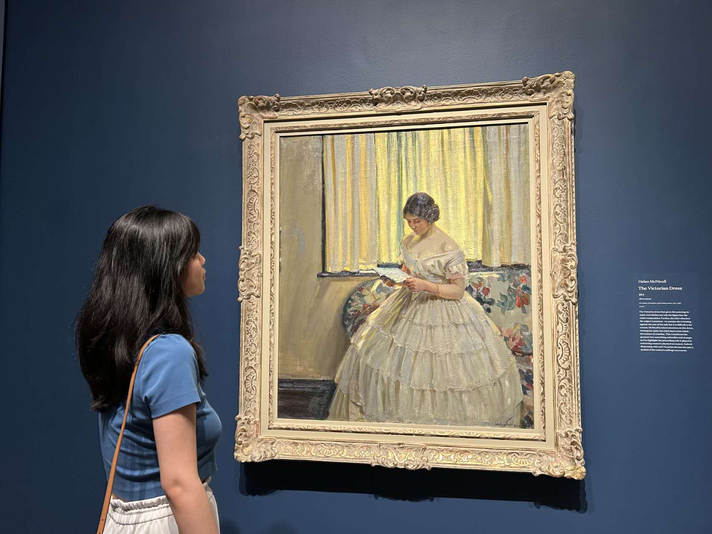

Hi, My name is Georgina Li.
Welcome to my personal website!
I'm a 2nd-year GBDA student at the University of Waterloo.
I'll be showing you a little bit about my background, life, and hobbies here.
Hello! My name is Georgina Li, and I am a second-year student at GBDA in Waterloo. I am also an international student, born in Beijing and raised in Shanghai. I completed my elementary, middle and high school studies in China. In 2022, I came to Canada with my family to start a new journey in my life.
I have been passionate about drawing, calligraphy, and reading since I was a child. I found that I was able to gain happiness and a sense of satisfaction while doing these things, so I have continued to do so to this day, which has become a big reason why I chose GBDA. GBDA created an opportunity for me to meet and learn from people who come from different places and backgrounds. Besides, in those two years, I've learned a lot that I never learned before, just like writing code. Back when I graduated from high school, I would have NEVER imagined that two years later I would have designed this website by myself!
In the future, I hope that as someone who is familiar with both Eastern and Western cultures, I can blend them both in my designs and spread the culture and stories I love to as many people as possible.
I have been interested in drawing since kindergarten, and I have learned how to sketch, watercolor and oil painting, etc. It's the hobby I've been doing for the longest time. A little fun fact: I like to draw flowers and landscapes more than people!
My other passion is cooking, I love to cook and bake for the people I love. I only discovered my interest and talent for cooking when I started to cook for myself in university. Of course, most of my cooking is Chinese, and I am planning to learn more about cooking different cuisines from all over the world later on.
I enjoy writing Chinese calligraphy! Born in a country with a long history and rich traditional culture, I think it is important and meaningful to learn a traditional Chinese art. I learned it from elementary school to high school, but I've been writing it less often in the past two years. It is kinda sad but I still insist to write my own Chunlian and Fu during Chinese New Year. (If you don't know what Chunlian and Fu are, you can go on and click the links to get a brief overview!)
I'm a huge kpop fan, basically seventy percent of my song list is kpop songs and they always make me feel energetic. I enjoy loving a kpop group and interacting with other fans. I also have a hobby of collecting albums, and I have so many that I've forgotten how many I have. This picture shows a small portion of my album collection!
If you're interested in chatting or reaching out to me, here are the social media or platforms that I use regularly!
| Platform/App | My Account/ID | Usage |
|---|---|---|
| l_georginaa | Messaging and work | |
| georginalmt | Messaging and share my life | |
| Discord | georginali_ | Messaging and voice/video chat |
| g25li@uwaterloo.ca | School and work |